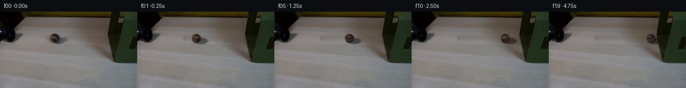
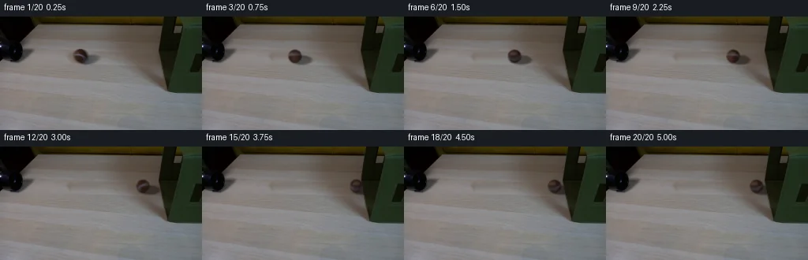
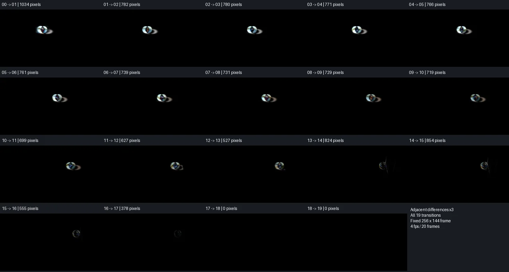

V0 · 初版
2026-11-05T16:44:54.395612+00:00 · RGB 5e248a41cff7
![]()
Observable Generation Trace
把最终像素视频、Harness 冻结的每轮候选、真实工具事件和 Agent 自述放在同一页。可观测证据与模型自述分开标记，避免把“模型说它检查过”误当成真实工具调用。
![首帧]()
Static locked-off single-shot with fixed frame throughout filmed with constant framerate in real-time. The scene shows a realistic scientific demonstration. The scene only contains the described setup and actions. The olive green fabric box is on a light wooden table and a black tube points from the left side to the right side. The brown tennis ball rolls from the left straight out of the black tube and hits the olive green fabric box.
首帧显示在左侧播放器初始画面。Track 权限、隔离和 tensor 一致性来自 run manifest，而不是 METHOD.md。
默认勾选初版和最终版；可选其他版本一起同步播放。仅检查图更新的连续重复快照已合并，回退旧视频仍保留为一次修订。
Observable events
来源：events.jsonl + run manifest
此 Track 禁止读取输出图片。逐轮预览由外部 Harness 自动冻结，只用于事后审计，生成 Agent 当时看不到这些页面。
Frozen candidates
每张图来自该 round 的真实 00 / 01 / 05 / 10 / 19 帧

pixels a158c808377f331c · code 2be12f4234460ee8
--- previous/generate.py
+++ current/generate.py
@@ -0,0 +1,247 @@
+"""Deterministic local-pixel continuation of the supplied tabletop photograph.
+
+No external renderer, model, network, or image-view tool is used. The photographed
+ball's colors are projected onto a rolling analytic sphere; other pixels are
+retained, except for a reconstructed table patch and a brief fabric deformation.
+"""
+from pathlib import Path
+import json
+import math
+import numpy as np
+from PIL import Image, ImageDraw
+from scipy.ndimage import map_coordinates, gaussian_filter
+from scipy.special import erf
+from artifact_io import save
+
+ROOT = Path(__file__).resolve().parent
+W, H, COUNT, FPS = 256, 144, 20, 4
+CX, CY, RX, RY = 102.1, 49.9, 8.4, 8.3
+Y, X = np.mgrid[:H, :W].astype(np.float64)
+SOURCE = np.asarray(Image.open(ROOT / 'first_frame.png').convert('RGB'))
+assert SOURCE.shape == (H, W, 3)
+ORIGINAL = SOURCE.astype(np.float64)
+
+
+def smoothstep(a, b, value):
+ q = np.clip((value-a)/(b-a), 0, 1)
+ return q*q*(3-2*q)
+
+
+def sample_rgb(array, sx, sy):
+ return np.stack([map_coordinates(array[..., c], [sy, sx], order=1,
+ mode='nearest', prefilter=False)
+ for c in range(3)], axis=-1)
+
+
+def table_without_ball():
+ """Rowwise grain continuation, using only nearby clean photograph pixels."""
+ table = ORIGINAL.copy()
+ # The object and its shadow are confined to this smooth, irregular patch.
+ left = ORIGINAL[37:65, 84:89].mean(axis=1)
+ right = ORIGINAL[37:65, 130:135].mean(axis=1)
+ # Neighboring clean pixels supply the low-amplitude sensor/grain variation.
+ texture = ORIGINAL[37:65, 140:190].copy()
+ texture -= gaussian_filter(texture, (0, 2.4, 0))
+ for yy in range(37, 65):
+ for xx in range(87, 135):
+ u = np.clip((xx-86)/46, 0, 1)
+ target = (1-u)*left[yy-37] + u*right[yy-37]
+ target += .55*texture[yy-37, xx-87]
+ object_support = np.exp(-.5*(((xx-CX)/11.4)**2+((yy-CY)/10.6)**2))
+ shadow_support = np.exp(-.5*(((xx-113)/12)**2+((yy-54.4)/5.5)**2))
+ support = max(object_support, shadow_support)
+ # Full replacement over the ball and shadow, feathered at the edge.
+ alpha = smoothstep(.13, .31, support)
+ alpha *= smoothstep(87, 92, xx)*(1-smoothstep(129, 134, xx))
+ alpha *= smoothstep(37, 40, yy)*(1-smoothstep(61, 64, yy))
+ table[yy, xx] = ORIGINAL[yy, xx]*(1-alpha)+target*alpha
+ return table
+
+
+BACKGROUND = table_without_ball()
+
+
+def illumination(nx, ny, nz):
+ # Upper-left/front light; a substantial ambient term matches the dim photo.
+ directional = np.clip(-.57*nx-.45*ny+.69*nz, 0, 1)
+ return .54+.46*directional
+
+
+# Estimate the original photographed surface color after removing edge mixing
+# and approximate fixed lighting. Back hemisphere uses an even extension of the
+# same sampled texture; it is an approximation, not newly observed detail.
+src_nx, src_ny = (X-CX)/RX, (Y-CY)/RY
+src_r = np.sqrt(src_nx**2+src_ny**2)
+src_nz = np.sqrt(np.maximum(0, 1-src_r**2))
+edge_sigma = .072
+src_alpha = .5*(1-erf((src_r-1)/(edge_sigma*math.sqrt(2))))
+alpha_safe = np.maximum(src_alpha, .25)
+foreground = (ORIGINAL-(1-src_alpha[..., None])*BACKGROUND)/alpha_safe[..., None]
+albedo = foreground/illumination(src_nx, src_ny, src_nz)[..., None]
+albedo = np.clip(albedo, [27, 14, 10], [121, 118, 128])
+# Interior surface samples are reliable; extend those out to the limb so the
+# brown sphere does not inherit table colors from its original soft boundary.
+inside_r = np.maximum(src_r, 1e-6)
+contract = np.minimum(1, .89/inside_r)
+TX = CX+(X-CX)*contract
+TY = CY+(Y-CY)*contract
… diff truncated; 160 more lines …
pixels 49ed6e05683ddcad · code 761107d93ccb1da3
--- previous/generate.py
+++ current/generate.py
@@ -180,7 +180,7 @@
bg = fabric_background(DENTS[f])
bg = composite_shadow(bg,cx,CY,DENTS[f])
speed = abs(POSITIONS[f]-POSITIONS[f-1])
- blur = min(.9,speed*.085)
+ blur = min(.9,speed*.085) if speed >= 1 else 0
bounds,ball=render_ball(cx,SQUASH[f],blur)
x0,y0,x1,y1=bounds
patch=bg[y0:y1,x0:x1]pixels 49ed6e05683ddcad · code 761107d93ccb1da3
No generate.py text change in this frozen round.
pixels 49ed6e05683ddcad · code e5de5fefd4384131
--- previous/generate.py
+++ current/generate.py
@@ -6,6 +6,7 @@
"""
from pathlib import Path
import json
+import base64
import math
import numpy as np
from PIL import Image, ImageDraw
@@ -216,6 +217,19 @@
png=np.asarray(Image.open(ROOT/'frames'/f'{f:02d}.png'))
assert np.array_equal(png,unpacked[f]),f
assert np.array_equal(frames[0],SOURCE)
+ # Independently reconstruct every frame from the standalone player packets.
+ html=(ROOT/'index.html').read_text()
+ embedded=json.loads(html.split('const DATA=',1)[1].split(';\nfunction unpack',1)[0])
+ player_frame=np.frombuffer(base64.b64decode(embedded['first']),dtype='<u4').copy()
+ assert np.array_equal(player_frame,tensor[:,:,0].reshape(-1))
+ assert len(embedded['deltas'])==COUNT-1
+ for i,encoded in enumerate(embedded['deltas'],start=1):
+ packet=np.frombuffer(base64.b64decode(encoded),dtype='<u4')
+ cursor=0
+ while cursor<len(packet):
+ start,count=map(int,packet[cursor:cursor+2]); cursor+=2
+ player_frame[start:start+count]=packet[cursor:cursor+count]; cursor+=count
+ assert np.array_equal(player_frame,tensor[:,:,i].reshape(-1)),i
delta=frames.astype(np.int16)-SOURCE.astype(np.int16)
changed=np.any(delta!=0,axis=-1)
# All scene alterations are around the original ball, path, and impact site.
@@ -228,6 +242,7 @@
'rgb_frame_shape':list(frames.shape),'pixel_tensor_shape':list(tensor.shape),
'pixel_tensor_dtype':str(tensor.dtype),'packing':'uint32 0xRRGGBB; axes y,x,t',
'first_frame_exact':True,'all_pngs_match_tensor':True,
+ 'standalone_player_packets_match_tensor':True,
'all_changes_localized':True,'last_three_frames_identical':True,
'ball_centers_x':POSITIONS.tolist(),'ball_center_y':CY,
'contact_frame':14,'box_peak_indentation_pixels':float(DENTS.max()),Final visual checks
Harness 保存的最终产物


Agent claims
以下文字由生成 Agent 撰写，不等同于工具证据
Inspection used PIL/NumPy RGB values, row statistics, and printed numeric/classified pixel grids. No image Read/View tool was used, and no visual review is claimed. Coordinates are in the original 256 × 144 frame, with the origin at its upper left.
Each frame occupies 0.25 seconds at a constant 4 fps. Frame 00 is the exact input; frame 19 begins at 4.75 seconds and completes the five-second sequence. There are no camera movements, cuts, labels, or new props.
| Frame | Time (s) | Ball center x (px, approximate) | Event |
|---|---|---|---|
| 00 | 0.00 | 102.1 | Exact supplied photograph; ball is already beyond the tube. |
| 01 | 0.25 | 109.8 | Continue rolling right; source ball area reveals table. |
| 02 | 0.50 | 117.4 | Continuous roll and rotating surface seam. |
| 03 | 0.75 | 124.9 | Roll straight with a traveling soft shadow. |
| 04 | 1.00 | 132.3 | Slight rolling-friction deceleration. |
| 05 | 1.25 | 139.6 | Continue across the unchanged table. |
| 06 | 1.50 | 146.8 | Continue toward the box. |
| 07 | 1.75 | 153.8 | Continue; no vertical bouncing. |
| 08 | 2.00 | 160.7 | Approach the box with continuous rotation. |
| 09 | 2.25 | 167.5 | Continue straight. |
| 10 | 2.50 | 174.2 | Gap to the box shrinks. |
| 11 | 2.75 | 180.8 | Final approach. |
| 12 | 3.00 | 187.2 | Roll within about one ball diameter of impact. |
| 13 | 3.25 | 193.6 | Ball reaches the fabric wall. |
| 14 | 3.50 | 195.1 | Impact: slight ball compression and local fabric indentation. |
| 15 | 3.75 | 192.2 | Small, damped recoil along the same line. |
| 16 | 4.00 | 190.7 | Recoil slows under rolling friction. |
| 17 | 4.25 | 190.3 | Ball nearly settles; fabric recovers. |
| 18 | 4.50 | 190.3 | Rest beside the box. |
| 19 | 4.75 | 190.3 | Hold the settled, unchanged setup. |
Implementation will reuse the photograph as the fixed background, reconstruct only the original ball/shadow patch from neighboring table pixels, and render the moving ball from its sampled surface texture with sphere normals and rolling rotation. The shadow and small local fabric response will be composited mathematically. Final diagnostics will check dimensions, frame-zero identity, tensor packing, exported PNG identity, motion continuity, and localized changes.
Final implementation refinement: frame 14 uses x=195.1, a 5.2% horizontal compression, and a 0.78-pixel local fabric indentation. The small compression keeps the lower contact line fixed. Motion blur is disabled for the final settling displacement below one pixel, so frames 17–19 hold the exact same RGB image.
This is a deterministic continuation made entirely with local Python pixel operations. The only scene sources are first_frame.png and prompt.txt. The supplied image was inspected through numeric RGB samples, region averages, threshold runs, and printed brightness grids. No image Read/View tool, external model, reference, network service, renderer, or subagent was used. No visual review is claimed.
The exact source RGB image is frame 00. The source photograph remains the fixed background. The original ball and its shadow occupy a small patch around (102, 50); this patch is reconstructed by interpolating nearby clean table colors row by row. Small grain variations come from another nearby portion of the same photograph. An irregular feathered mask limits the reconstruction to the object and shadow, retaining the tube, table, and box elsewhere.
The moving ball has an approximate radius of 8.4 pixels horizontally and 8.3 vertically. Its photographed brown colors and pale seam provide the material texture. Approximate source edge mixing and lighting are removed; unreliable edge samples are extended from the interior. Analytic sphere normals rotate that material according to horizontal displacement divided by radius, modeling rolling without slipping. The unseen hemisphere uses a continuous extension of the observed material. This is a texture approximation; its details were not observed in the source frame.
Twenty prescribed ball positions produce a gradually decelerating rightward roll, contact at frame 14 (3.50 seconds), and a small dissipative recoil. The ball starts at the position already visible outside the tube in the input. The center reaches x=195.1 at impact and settles at x=190.3. The path keeps a fixed ground contact line. At impact the ball compresses horizontally by 5.2%, while a short Gaussian displacement field indents the fabric edge by 0.78 pixels. The local cloth deformation recovers over the next two frames. Positions and contact response are authored mathematical animation parameters, rather than the output of a dynamics engine.
The ball is rendered at four times the output resolution, then reduced with area averaging. Fixed directional/ambient shading, optical softening, and small temporal exposure offsets reproduce a subdued photographed appearance. A soft elliptical shadow follows the ball on the table and is clipped at the measured box edge. A small contact shadow lies under the sphere. Low-speed exposure blur is disabled during the final hold; frames 17–19 are identical.
Run python generate.py from this workspace to reproduce the artifacts. NumPy, Pillow, and SciPy perform sampling, filtering, drawing, and packing. The provided artifact_io.py writes the RGB frames, packed tensor, inspection sheet, and standalone HTML player. The generator also writes transition_check.png and verification.json.
frames/00.png–frames/19.png: twenty RGB PNGs, each 256 × 144 pixels, sampled at 4 fps; each is displayed for 0.25 seconds, totaling five seconds.pixels.npz: key pixels, shape (144, 256, 20), dtype uint32. Every entry is packed as 0xRRGGBB, with axes (y, x, frame).index.html: self-contained player with all pixels embedded; no network assets are required.inspection.png: eight representative RGB frames in the supplied contact-sheet format.transition_check.png: all nineteen adjacent-frame difference maps, amplified three times for inspection. The maps include changed-pixel counts.OBSERVATION.md: measurements and the twenty-frame event plan, written before generation coding.generate.py: deterministic generation and export code.verification.json: machine-readable results of the checks below.The final checks decode the packed tensor and compare every exported PNG pixel for pixel, confirm exact input equality at frame 00, independently reconstruct every HTML player delta packet and compare it with the tensor, verify 20 frames and RGB dimensions, confirm all changed pixels lie in the ball/path/contact region, and confirm the last three frames are identical. Numeric sphere interior color samples and reconstructed table boundary differences were inspected as well. All final checks pass.